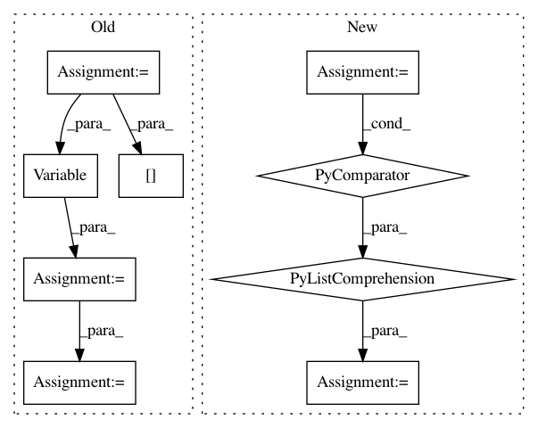

26421ce20c6b626ceacafbb3282cad1d5dce04ca,onmt/Models.py,Embeddings,forward,#Embeddings#Any#,60
Before Change
word = self.word_lut(src_input[:, :, 0])
emb = word
if self.feature_dicts:
features = [feature_lut(src_input[:, :, j+1])
for j, feature_lut in enumerate(self.feature_luts)]
// Apply one MLP layer.
emb = self.activation(
self.linear(torch.cat([word] + features, -1)))
if self.positional_encoding:
emb = emb + Variable(self.pe[:emb.size(0), :1, :emb.size(2)]
.expand_as(emb))
emb = self.dropout(emb)
return emb
class Encoder(nn.Module):
After Change
Return:
emb (FloatTensor): len x batch x sum of feature embedding sizes
feat_inputs = (feat.squeeze(2) for feat in src_input.split(1, dim=2))
features = [lut(feat) for lut, feat in zip(self.emb_luts, feat_inputs)]
emb = self.merge(features)
return emb
In pattern: SUPERPATTERN
Frequency: 3
Non-data size: 9
Instances
Project Name: OpenNMT/OpenNMT-py
Commit Name: 26421ce20c6b626ceacafbb3282cad1d5dce04ca
Time: 2017-07-30
Author: bpeters@coli.uni-saarland.de
File Name: onmt/Models.py
Class Name: Embeddings
Method Name: forward
Project Name: dnouri/skorch
Commit Name: a7cd7a15a9baf741f2b4fcd32f3d8055827889b5
Time: 2017-08-08
Author: marian.tietz@ottogroup.com
File Name: examples/word_language_model/predict.py
Class Name:
Method Name:
Project Name: Shawn1993/cnn-text-classification-pytorch
Commit Name: 5c177f3d9a29fc7737bd4734315820d1c11c7e87
Time: 2019-07-17
Author: rriva002@ucr.edu
File Name: cnn_text_classification.py
Class Name: CNNClassifier
Method Name: predict